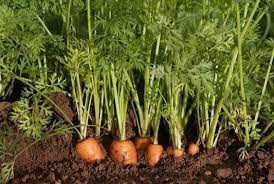

Crop Overview
Carrot (Daucus carota) is a versatile root vegetable known for its sweet and crunchy taproot. It is not only a popular raw snack but also a key ingredient in various culinary dishes, adding both flavor and nutrition.

Carrots come in a range of colors, including orange, purple, yellow, and white, each offering unique nutritional benefits. They are rich in vitamins, particularly beta-carotene, which is essential for eye health and overall well-being.
Cultivation Practices
Successful carrot cultivation involves careful attention to soil preparation, planting, and ongoing care. Here are essential practices to ensure a bountiful harvest:
- Soil Preparation: Choose loose, well-drained soil without rocks or debris. Incorporate organic matter like compost for improved fertility.
- Planting: Directly sow carrot seeds into the soil. Provide consistent watering to support germination and early growth.
- Thinning: Once seedlings emerge, thin them to ensure proper spacing, allowing carrots to develop straight and avoid overcrowding.
- Watering: Carrots need consistent moisture, especially during dry periods. Avoid overwatering to prevent issues like root rot.
- Harvesting: Carrots are ready for harvest in 70 to 80 days. Gently pull them from the soil, and consider harvesting smaller carrots for tenderness.
Varieties
Carrots come in various varieties, each with distinct characteristics. Some popular carrot varieties include:
- Nantes: Short and cylindrical, known for sweetness.
- Danvers: Broader at the top, suitable for different culinary uses.
- Imperator: Long and slender, often used for processing.
- Chantenay: Short and stout, great for heavy or clay soils.
Soil Requirements
Carrots thrive in well-drained, sandy loam soil with good fertility. The following soil requirements contribute to successful carrot cultivation:
- Texture: Loose soil allows carrot roots to grow straight and develop without deformation.
- Drainage: Well-drained soil prevents waterlogged conditions, reducing the risk of diseases like root rot.
- Fertility: Enhance soil fertility by incorporating organic matter, such as compost or well-rotted manure.
Pest and Disease Management
While carrots are relatively resistant to pests and diseases, some common issues may arise. Here are strategies for pest and disease management:
- Carrot Rust Fly: Use row covers to protect young plants from carrot rust flies.
- Powdery Mildew: Ensure proper spacing for air circulation and choose resistant varieties.
- Damping-Off: Avoid overwatering and maintain proper soil drainage to prevent damping-off disease.
Harvesting and Storage
The timing of carrot harvesting is crucial for optimal flavor and quality. Harvest carrots when they reach the desired size, usually around 70 to 80 days after planting. Gently pull them from the soil, and remove excess soil without damaging the roots.
For storage, remove the carrot tops to prevent moisture loss. Store carrots in a cool, dark place with high humidity. Properly stored carrots can last for several weeks, maintaining their crispness and sweetness.